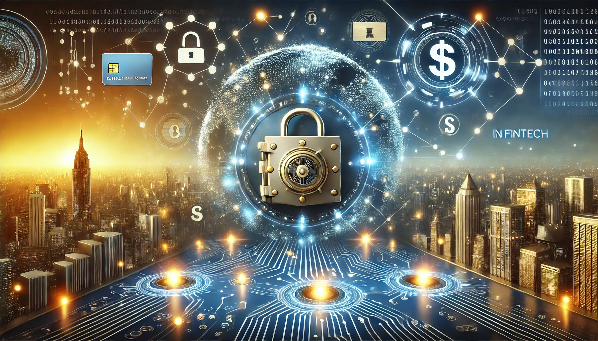

Cybersecurity in Fintech: Protecting Customer Data in a Digital World
Tue Dec 3 2024
Cybersecurity in Fintech: Protecting Customer Data in a Digital World
The fintech industry has revolutionized financial services by offering convenience, accessibility, and innovation. From mobile payments to blockchain-based solutions, fintech companies handle vast amounts of sensitive customer data daily. However, this digital transformation also makes the sector an attractive target for cybercriminals. Protecting customer data is no longer optional—it's a critical responsibility for every fintech organization.
In this blog, we explore the importance of cybersecurity in fintech, the threats the industry faces, and best practices for safeguarding customer data.
The Importance of Cybersecurity in Fintech
1. Trust and Reputation
Fintech companies thrive on customer trust. A data breach can severely damage a company's reputation and erode customer confidence. In a competitive industry, losing customer trust can be detrimental to long-term success.
2. Compliance with Regulations
Governments and regulatory bodies worldwide enforce strict data protection laws, such as GDPR, CCPA, and PCI DSS. Non-compliance can lead to hefty fines, legal actions, and loss of operating licenses.
3. Preventing Financial Losses
Cyberattacks can lead to significant financial losses for fintech companies and their customers. From ransomware demands to fraudulent transactions, the costs of inadequate cybersecurity can be catastrophic.
Key Cybersecurity Threats in Fintech
1. Phishing AttacksPhishing remains one of the most common methods hackers use to steal sensitive information. By impersonating trusted entities, cybercriminals trick employees or customers into divulging passwords, account details, or financial information.
2. Ransomware
Ransomware attacks involve locking companies out of their systems and demanding a ransom for access. In fintech, such attacks can disrupt critical services, leading to financial and reputational damage.
3. Data Breaches
Hackers target fintech companies to gain access to customer data, such as social security numbers, credit card details, and banking information. These breaches can lead to identity theft and financial fraud.
4. Insider Threats
Employees or contractors with access to sensitive data may misuse their privileges, either intentionally or accidentally. Insider threats are particularly challenging to detect and prevent.
5. Third-Party Vulnerabilities
Fintech companies often rely on third-party vendors for services like cloud storage or payment processing. Weaknesses in a vendor’s cybersecurity can expose the fintech firm to risks.
Best Practices for Protecting Customer Data
1. Implementing Strong Encryption
Encryption ensures that data transmitted between users and servers remains secure and unreadable to unauthorized parties. Fintech companies should use advanced encryption protocols like TLS 1.3 and AES-256 to safeguard customer data.
2. Adopting Multi-Factor Authentication (MFA)
MFA adds an extra layer of security by requiring users to verify their identity using multiple methods, such as passwords, biometrics, or one-time codes. This reduces the risk of unauthorized access.
3. Regular Security Audits and Penetration Testing
Conducting regular security audits and penetration tests helps identify vulnerabilities in the system before hackers exploit them. Fintech firms should hire cybersecurity experts to assess their defenses periodically.
4. Employee Training and Awareness
Human error is a leading cause of cybersecurity incidents. Regular training ensures employees recognize phishing attempts, handle data responsibly, and follow best practices for cybersecurity.
5. Securing APIs
APIs (Application Programming Interfaces) are integral to fintech operations, enabling seamless integration between platforms. However, unsecured APIs can become entry points for cyberattacks. Companies should use secure API gateways and robust authentication methods.
6. Investing in Advanced Threat Detection Systems
Fintech companies should deploy AI-driven threat detection systems to monitor and analyze network activity in real time. These systems can identify and neutralize threats before they escalate.
7. Implementing Zero-Trust Architecture
Zero-trust architecture assumes that no user or device is trustworthy by default, even within the network. Access is granted only after thorough verification, minimizing the risk of insider threats and unauthorized access.
The Role of Blockchain in Cybersecurity
Blockchain technology, a cornerstone of many fintech innovations, also offers significant cybersecurity benefits:
• Immutable Ledger: Blockchain's decentralized nature ensures that transaction records cannot be altered, reducing the risk of fraud.
• Enhanced Data Security: Data stored on the blockchain is encrypted and distributed across a network, making it harder for hackers to compromise.
• Smart Contracts: Automated smart contracts can enhance security by eliminating the need for intermediaries in financial transactions.
While blockchain is not a one-size-fits-all solution, it can complement existing cybersecurity measures.
Conclusion
As fintech transforms the financial landscape, protecting customer data has never been more critical. Cybersecurity is not a one-time investment but an ongoing commitment to safeguarding sensitive information against evolving threats. By adopting best practices like encryption, MFA, and regular audits, and leveraging technologies like blockchain, fintech companies can build robust defenses. Additionally, cultivating a cybersecurity-first culture and staying compliant with regulations ensures trust, sustainability, and long-term growth. In the digital age, cybersecurity is not just about protecting data—it's about securing the future of fintech itself.
-By Bikesh Kumar
Corporate Relations Executive E-CELL